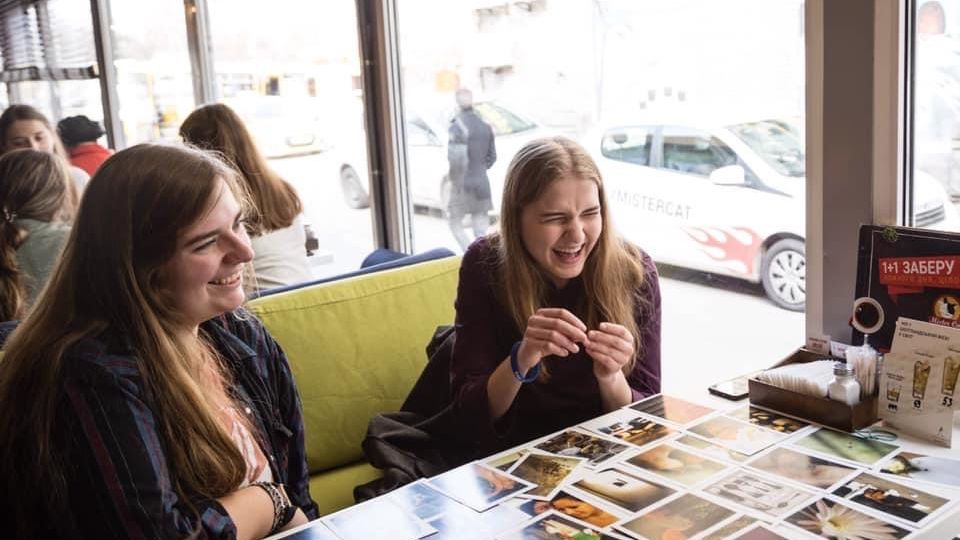

01Особистий форматдіє
Особисті зустрічі та менторство
Персональний формат, у якому студент може отримати увагу, підтримку та простір для розмов про життя, вибір, цінності, віру й майбутнє. Ми допомагаємо студентам краще пізнати себе та Бога, робити наступні кроки у вірі й поступово брати відповідальність за власне духовне зростання.
Серед форматів:
«Людина-Людина»«ЯХТО»«Успіх Inside»«Твій світогляд»«Step Up»«Зростай»«ПРО тебе»«ПРО твої цінності»